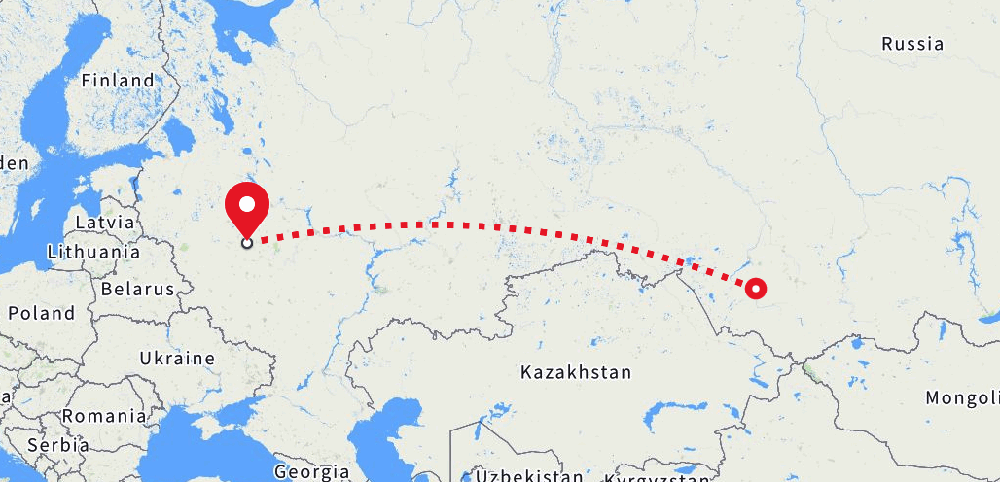

Hacking on clojure.core & runtime
Vlad Bokov
vlad@lunatic.cat
Origin

Psst, learn you some russian for the great good
Let's get serios (a poll)
- encountered a clojure bug
- debugged clojure (JDWP etc)
- changed something inside clojure internals
- contributed back